Just ripped my copy of Tanya Chua’s Bored, because as it turns out, it didn’t sell outside of Singapore. When my CD corrodes and stops being playable, it’s probably going to be gone forever. If you poke around the internet, the other significant search hit was in the National Library’s collection.
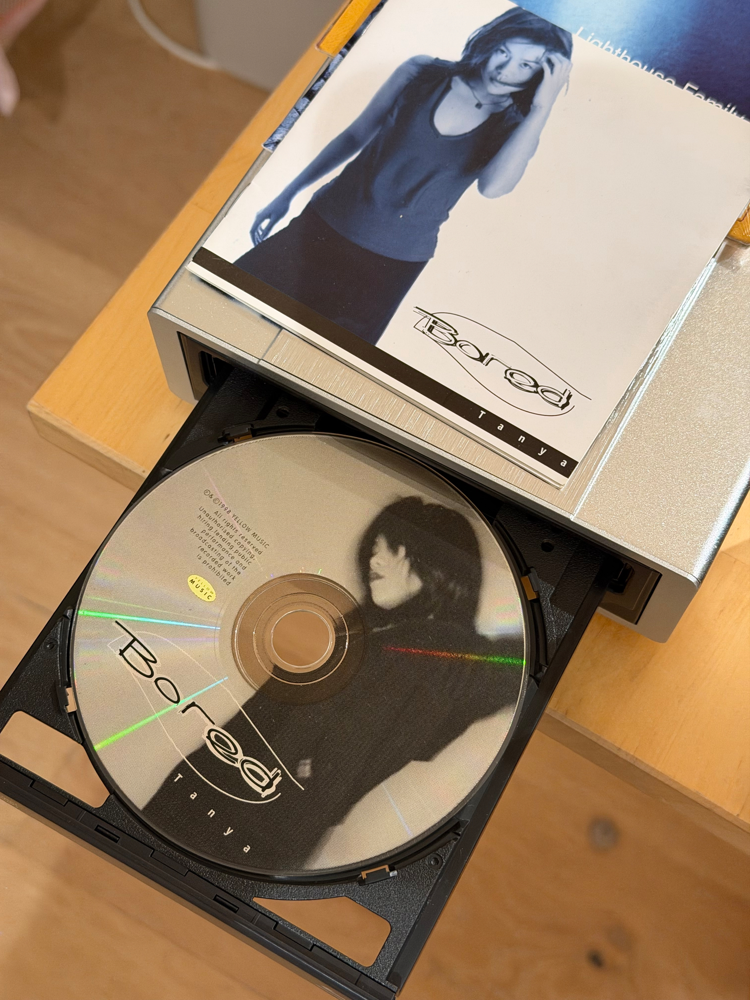
A mini roadtrip up the CA-1, from Davenport to Pacifica. Shot on a Hasselblad 500CM with Instax Square, via a NONS instant film back.
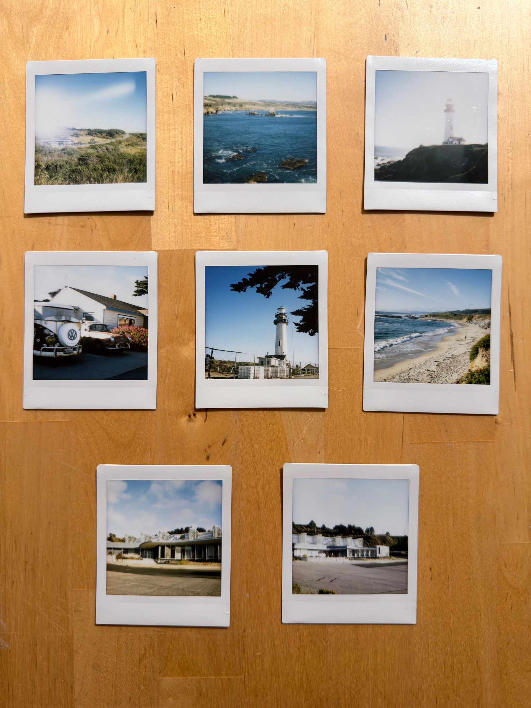

Got my 30m purple pin for barebow achievement shoot today. Needed 170 out of 360, got 271. Gotta repeat for a gray pin next! Much gratitude for the community at Golden Gate JOAD!

If you happen to be in a window seat, on a Boeing Dreamliner at sunrise… the electrically-tinted window shades make for some really interesting pics, especially on a recent iPhone with NightMode enabled!
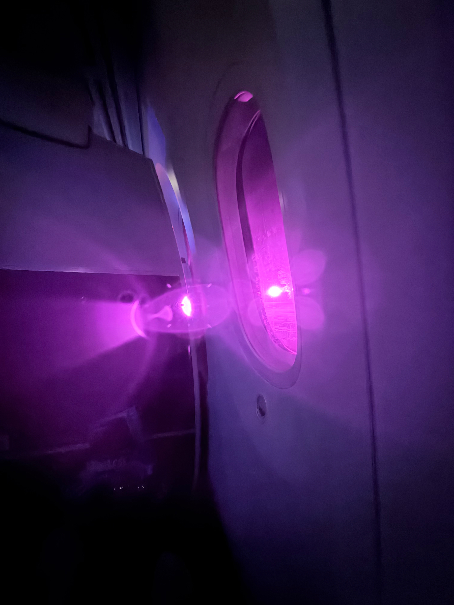


Distraction-free living and working in tech seems at-odds with each other.
Distraction-free living and working in tech seems at-odds with each other.
On the one hand, you want to be able to focus on thoughts, and act on long term goals without being constantly distracted by the next shiny thing. You want this because you know you’d do quality work, be a better person overall, if only you weren’t switching context every 30 seconds.
But on the other hand, by definition, working in tech almost certainly means working with tech. And it’s nigh-impossible to escape the endless Slack and email notifications without feeling like you’re missing out on something.
Got my hands on the GOAT of laptop keyboards, IMHO. Beautifully resto-modded with new screen, new WiFi and SSD. Unfortunate that the donor laptop had chips on the case.
Now I just need to install Linux.
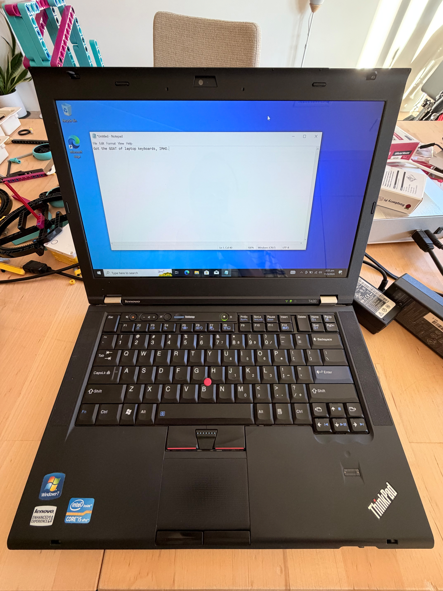
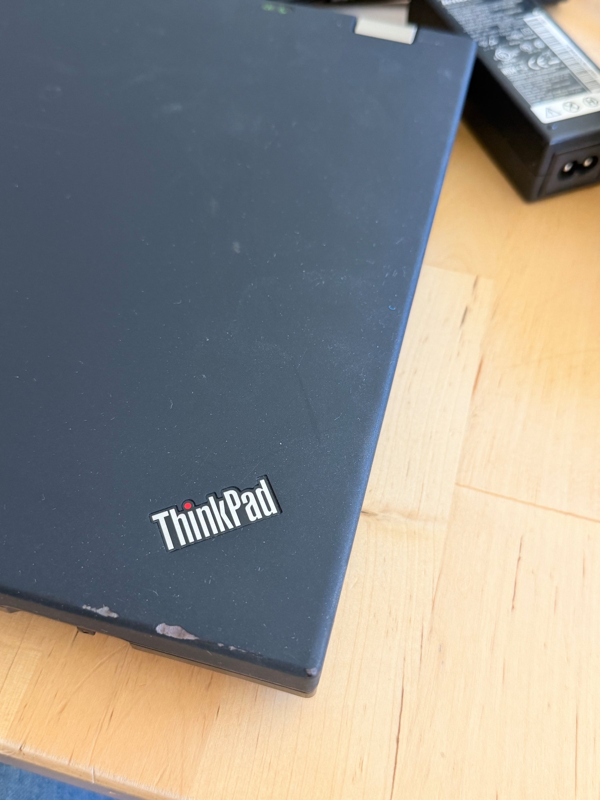
New old toy. Completed the vibes with late 90’s tunes.
I forgot how small these things were!
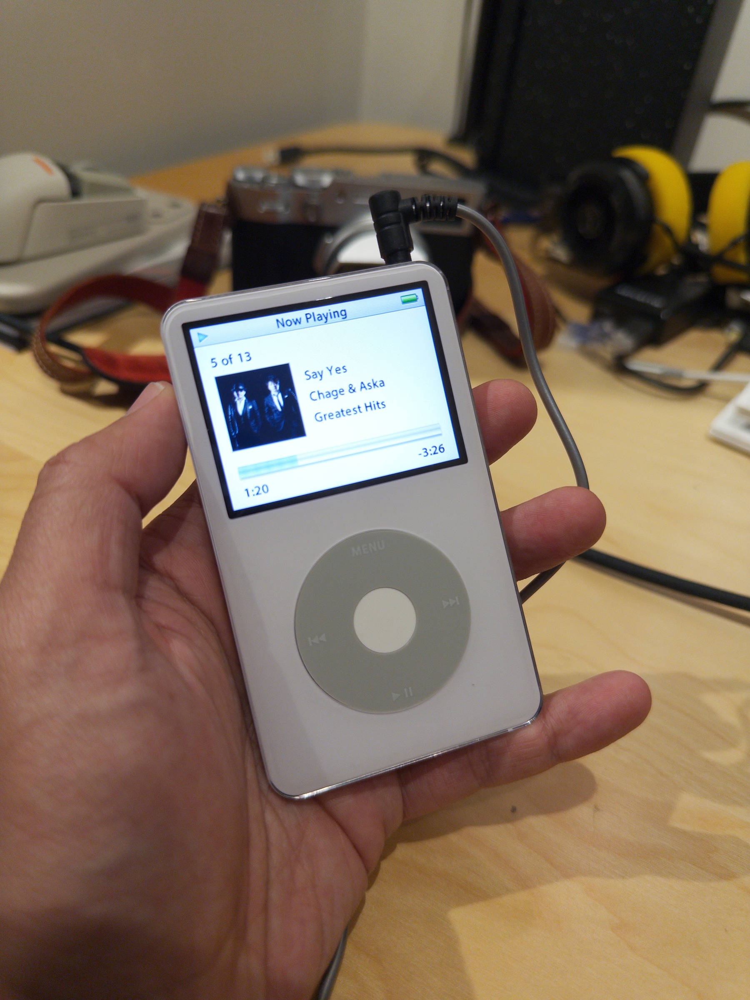
Found this Taiwanese #alishan coffee way too tart when brewed via pourover. Workaround was to make cold-brew concentrate with it and top with cold milk instead, which made it almost delicious
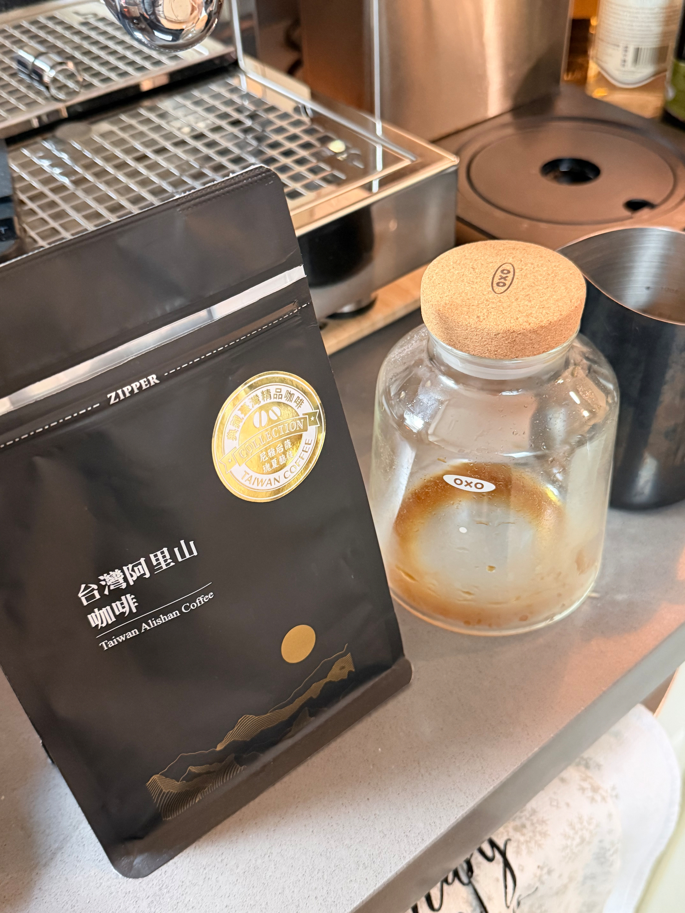
Turns out that if you ever pull out the rubber grommet around your car’s cable bundle, the way to reinsert it is to ease out the clips on the hard plastic bit and put the grommet on that before clipping it back in #TIL #carmaintenance
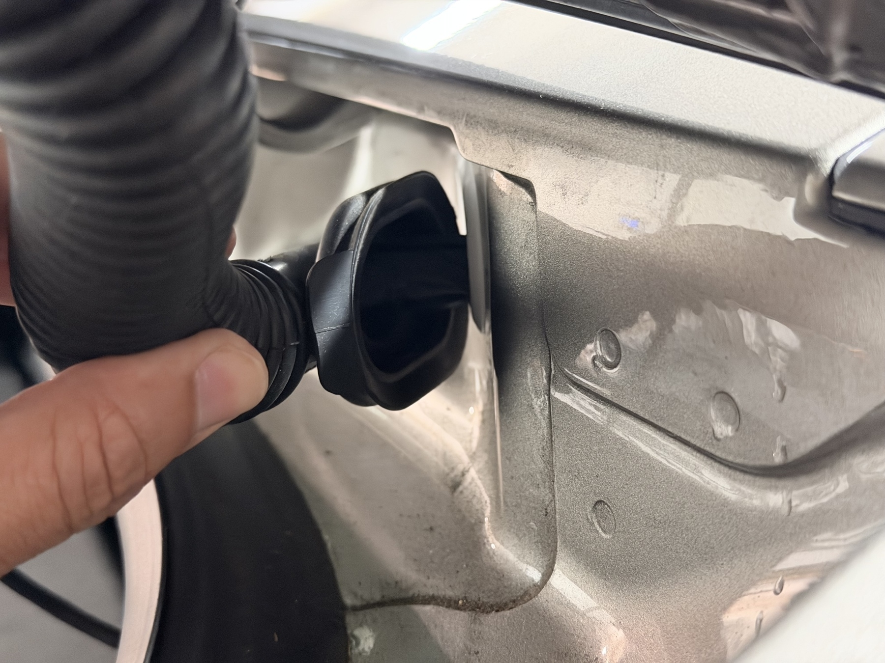
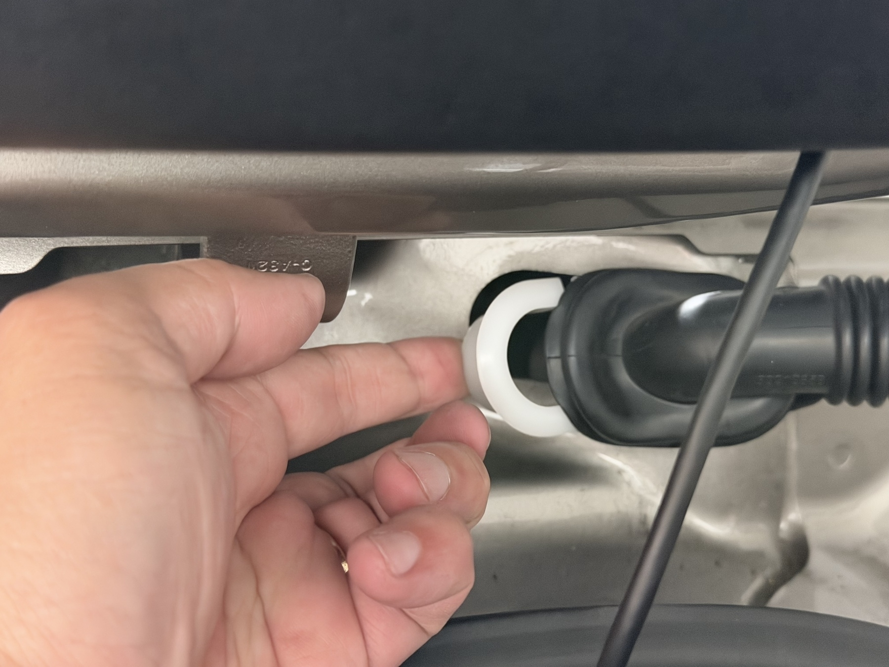
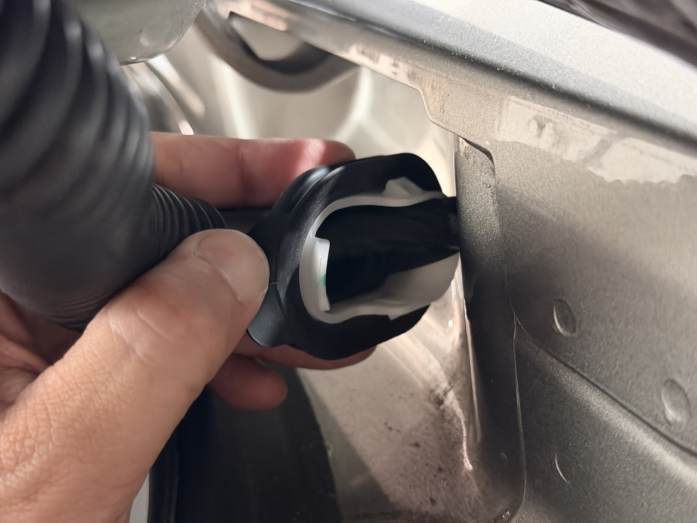
Instax Wide should probably be rated ISO 4000 in bright light
Took a few hours on my day off to try out the Lomograflok back. Used it with the Intrepid with a 150mm/f5.6 lens - the 90mm Nikon doesn’t fit.
I came away a bit disappointed that I had to waste a box of Instax Wide to figure out that the film needed to be exposed at around ISO 4000 in bright light instead of ISO 800, which is the rated box speed.
Finally got some semblance of a decent exposure, but that was almost 2 hours in.
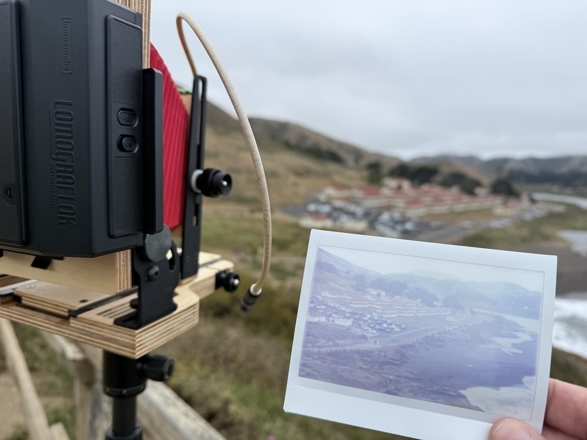
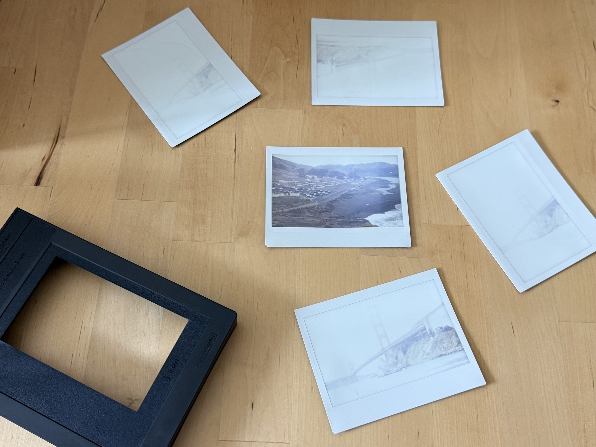
Not the best cabling job in the world, but it’s probably as good as it gets. I feel like the PC case industry is ripe for standardization and cable buses #cablemanagement


I now cross-post out from #micro.blog. Because it is amazing. If you’re using an aggregator and are subscribed everywhere I am in the #fediverse, I’m sorry you’ve 4 copies of every post. Including this one.
Our local underfunded public transit option. Not bad for America, but I wish the options were better. #bart
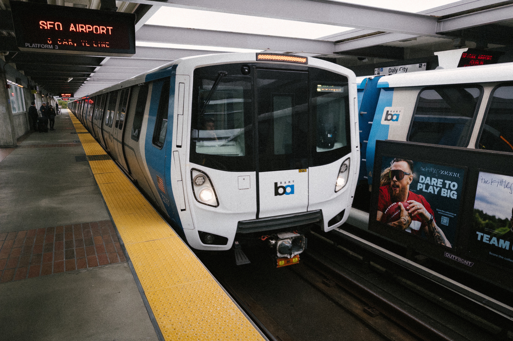
Just found out that MaximumPC, a magazine I’ve followed since the 2000’s, has finally closed. They wrote good articles, didn’t have trashy advertisers and always added a hint of humor. It was as much of my computing journey as my college degree was. I’m going to miss it very much.
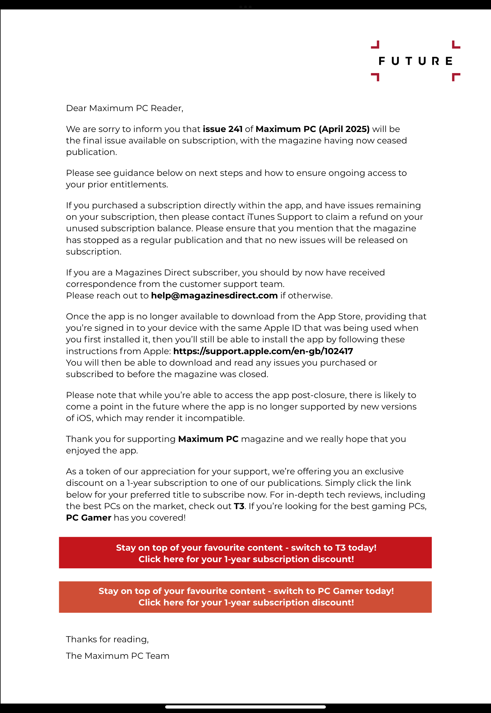
I don’t know what I’m going to do with this, but I’m glad I got it in before the tariffs were announced.